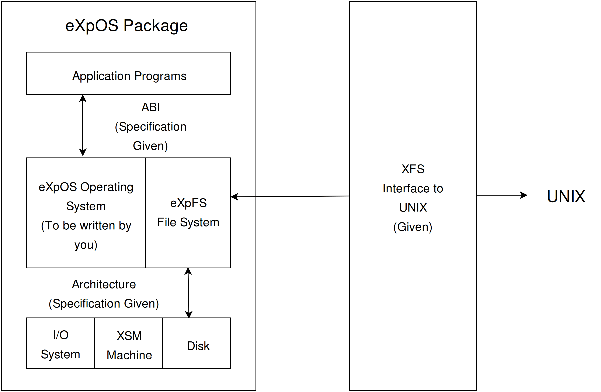
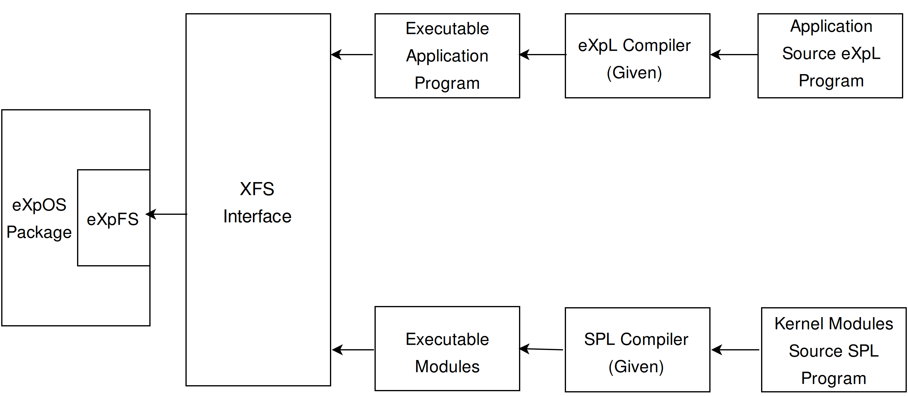

Source Code
The entire project code is hosted on Github http://github.com/exposnitc
Project eXpOS or eXperimental Operating System is an educational platform to develop an operating system. It is an instructional tool for students to learn and implement OS data structures and functionalities on a simulated machine called XSM (eXperimental String Machine).
The OS is programmed using a custom language known as SPL (System Programmer's Language) and application programs, which run on the OS, are programmed using ExpL (Experimental Language).
The methodology we suggest for you is to follow the roadmap. The roadmap takes you through a step by step journey towards the complete implementation of the eXpOS operating system. At each step, you will be asked to read concepts, specifications and interfaces which you must learn to complete that step. In fact, you will be asked to read only what is necessary for doing that step. The links to the reading material will be given at appropriate places in the roadmap.
Click HERE to proceed to the roadmap.
However, if you are curious about what the "final system" you are going to build looks like, we give a brief overview here. You are warned not to get lost in the links. The roadmap will ask you to read the appropriate parts of the documentation as and when required.
An Overview of the eXpOS package.

In the above figure, your job is to implement the OS. An architecture simulator for the Experimental String Machine (XSM) is given to you. Your primary job is to write the eXpOS kernel on top of this machine so that application programs can run on top of the operating system. You will also be required to implement some application programs like the shell that provides a user interface for the OS.
Clearly, in order to write the OS, one must be told its two interfaces – the interface to the architecture below and the interface to the executable application programs above. The former is given to you in the architecture specification. The latter which specifies the interface between executable applications and the OS is called the application binary interface (ABI).
Given all the above, one must still have some mechanism to:
1. Write the OS modules and application programs and get them in executable format.
2. Load these executable programs into the machine's disk so that these programs can be executed when the machine is run.
The following support tools come along with the eXpOS package to help you achieve the above objectives.
For the first task, it is convenient to write the OS modules and application programs in some high level language like C from your host unix environment and (cross) compile it into the executable format defined by the ABI. However, we do not provide you with a C cross compiler. Instead, we provide you two cross compilers, one for the System Programming Language (SPL - which is essentially an assembler for the XSM machine) and one for a high level language called the Experimental Programming Language (ExpL). While application programs can be written in ExpL, kernel modules will have to be written in the SPL language as ExpL does not support "low level programming" necessary to implement the OS.
For the second task, we provide you with an interface software called the XFS interface. This tool allows you to load executable kernel modules as well as application programs from your host unix environment to the eXpOS disk. The tool recognizes the file system format of eXpOS (called the experimental file system or eXpFS) and allows you to transfer data files as well between the host Unix sytem and the disk.
The following figure illustrates how the various support tools interact.

As a technical point, when application programs are written in a high level language like ExpL, there needs to be an interface specification to define how OS routines can be invoked from a high level application program (ABI only specifies the low level interface, which defines the way the target low level code, typically generated by a ExpL compiler must invoke the OS routines). The high level interface to OS routines is called the Application Programmer's Interface (API).
The eXpOS specification provides an informal description of OS from the view point of the user/application programmer.
The eXpOS FAQ provides some more information.
We wish you enjoy doing the project following the Roadmap.